Selecting the Create a New Diagram button or the Edit the Network Diagram button on the Network Diagram page opens the diagramming tool. This tool allows users to draw a diagram of a control system or information technology (IT) network using predefined templates and components specifically used in industry standards.
Once the diagram has been developed, attribute data can be assigned to enhance the visual presentation and provide input for the analysis and question ranking. The tool incorporates simple network analysis features to identify areas of vulnerability and recommendations for protection.
Changes in the diagramming tool are automatically saved.
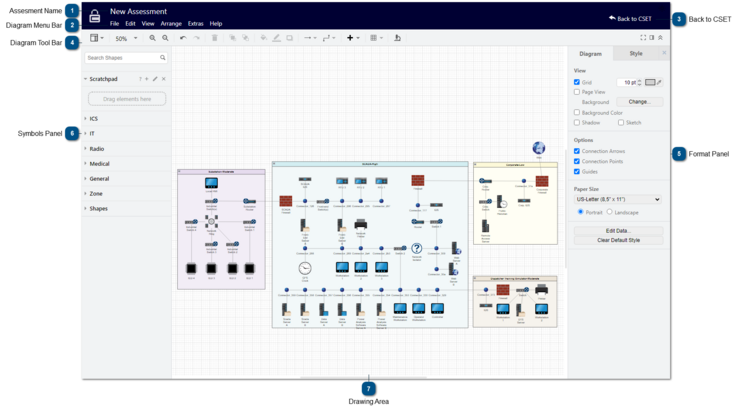
Assesment Name
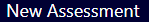
The name of the assessment displays at the top of the diagramming tool.
The diagram tool bar includes the following options:
View
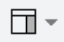
Selecting the view dropdown menu displays the following options:
Shapes
Select the Shapes option to show/hide the Symbols Panel.
Format
Select the Format option to show/hide the Format Panel.
Ruler
Select the Ruler option to show/hide the ruler guidelines in the drawing area.
Find/Replace
Select Find/Replace to search the drawing area for specific text and replace it with the entered text.
Layers
Select the Layers option to manage the diagram's layers.
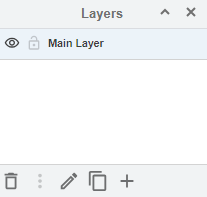
Tags
Select the Tags option to add and assign tags to objects.
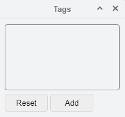
Outline
Select the Outline option to view the outline of the diagram.
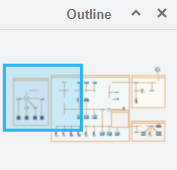
Fullscreen
Select the Fullscreen option to view the diagramming tool in fullscreen.
Zoom
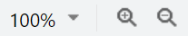
Use the zoom dropdown menu or buttons to zoom in or out of the drawing area.
Undo/Redo
Select the Undo button to reverse the last action.
Select the Redo button to reverse the last undo action.
The Redo button is only enabled after undoing an action.
Delete
Select the Delete button to remove an object.
The Delete button is only enabled if an object is selected.
Bring Forward
Select the Bring Forward button to bring the selected object in front of the object one position in front of it.
The Bring Forward button is only enabled if an object is selected.
Send Backward
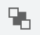
Select the Send Backward button to send the selected object behind the object one position behind it.
The Send Backward button is only enabled if an object is selected.
Fill
Select the Fill button to fill the selected shape with the selected color.
The Fill button is only enabled if an object is selected.
Line Color
Select the Line Color button to change the color of the selected line or border of the selected shape.
The Line Color button is only enabled if an object is selected.
Shadow
Select the Shadow button to add a shadow to the selected object.
The Shadow button is only enabled if an object is selected.
Connection
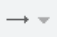
Select the Connection dropdown menu to view and select a style for a connector.
Waypoints
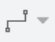
Select the Waypoints dropdown menu to view and select a style for a waypoint.
Insert
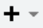
Select the Insert button to add a shape, text, freehand drawing, image, template, layout, or other objects.
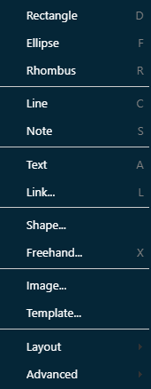
Table
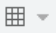
Select the Table button to insert a table into the drawing area.
Analyze
Select the Analyze button to turn on/off basic network analysis to allow the system to dynamically analyze the diagram as components, zones, or lines are added, removed, or modified.
The Analyze button is turned off by default.
When turned on, any network warnings will appear as red dots on the diagram next to the affected line or component.
Hover over the dot to view the network warning message.
When an object is not selected, the format panel displays the following tabs:
Diagram
Use the Diagram tab to update the view, options, and paper size of the diagram.
Style
Use the Style tab to update the style and color of the zones, shapes and connectors within the diagram.
When an object is selected, the format panel displays the following tabs:
Style
Use the Style tab to update the background, border, opacity, crop symbols, edit objects, update copy/paste/set as default styles, and property details.
Text
Use the Text tab to update the font, size, position, spacing, and color of any embedded text.
Arrange
Use the Arrange tab to arrange, resize, position, rotate, file and align, group, and lock objects.
Property
Use the Property tab to assign values to the following property fields:
Label
Enter the common name used to refer to the object. This name will be used in the Questions screen, the analysis, and reports. While not required, ideally these names should be unique.
Examples: Main Historian, Corp Firewall, Pump House HMI, etc.
Type (Used only for zones)
Select the applicable type for the selected zone from the dropdown menu.
SAL (Used only for zones)
Select the applicable security assurance level (SAL) for the selected zone from the dropdown menu. This allows the user to separate areas of the facility into areas that need greater protection and those that do not.
Components within the zone automatically adopt the SAL of the zone.
Example: If the assessment has an overall SAL of "High" based on the consequences of a potential event happening at the facility and the user does not use zones and does not change the SAL level, then all component questions that are marked as "High" will be presented. If the user changes a particular zone to "Low," because it's not included in the critical areas, the question set would be smaller and less rigorous. The zone approach allows users to minimize costs and use of limited resources, while still providing the appropriate levels of protection for the site.
Owner (Used only for zones)
Enter the name of the person responsible for the zone and its included components.
IP Address
Enter the IP address for the component for the user's reference.
Note: IP address information is not used by CSET at this time and is intended only for the user's reference.
Asset Type
Select the applicable asset type for the selected component from the dropdown menu.
Note: Changing the type will automatically change the component icon in the drawing area.
Criticality
Select the applicable criticality for the component from the dropdown menu.
This allows the user to capture the relative importance of unique components in the diagram and can be used in planning, design, and maintenance decisions.
Host Name
Enter the host name of the component for the user's reference.
This is the official network name or property number for the piece of hardware.
Example: ACME1-43222-AC-22
Note: Host name information is not used by CSET at this time and is intended only for the user's reference.
Has Unique Questions
Select the Has Unique Questions checkbox to indicate that the component is different from other components of that type in the system.
If selected, CSET will provide a separate full set of questions within the assessment specifically for the component.
Default questions that are answered for all components in the system, or those of a given type, will not propagate to any component marked as unique.
Example: An organization may have five servers in the facility, and four of those have been replaced in the last year with new models. These four are configured with the latest policies and take advantage of features inherent in a new operating system and other improved utilities. The fifth server is several years old and uses technology from an earlier period. In this situation, the fifth server should be marked as unique, so that the answers related to the four new servers are not assigned to the older fifth server.
Note: Several components, like the web, have no assigned questions. The Has Unique Questions checkbox is disabled for those components.
Description
Enter a description of the component.
Subnet Name (Used only for connectors)
Select the subnet name of the connection for the user's reference.
Note: Subnet name information is not used by CSET at this time and is intended only for the user's reference.
Security (Used only for connectors)
Select the applicable security type for the selected connectors.
For example: An untrusted line may be one where communications are carried over a public phone line. It can also include internal lines that may cross physical locations that have public access.
Note: Untrusted links will be included in network analysis.
Link Type (Used only for connectors)
Select the applicable link type for the selected connector.
Search for a specific shape, component, or zone to add to the diagram.
Scratchpad
Use the scratchpad as a temporary workspace to keep commonly used shapes for easy access.
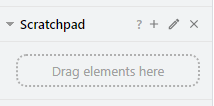
Select the question mark to open information about the scratchpad in the user's browser.
To add an object to the scratchpad:
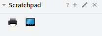
Drag and drop the object from the drawing area to the scratchpad
OR select the object in the drawing area and select the plus icon on the scratchpad.
Select the pencil icon to name, reorder, or remove objects from the scratchpad.
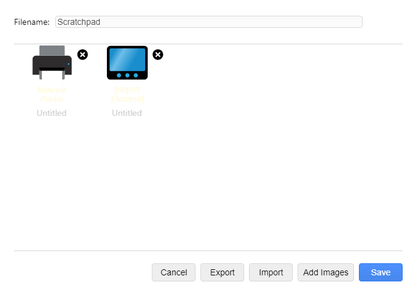
Note: The scratchpad is stored in the local storage of the browser, which means its content are deleted if the browser's cookies are cleared. To store the scratchpad permanently, users can export the scratchpad.
Shapes
The symbols panel includes a variety of components, shapes, zones, and text fields.
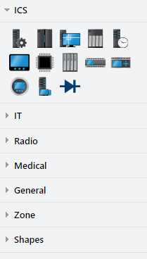
Drag and drop objects onto the drawing area to create or modify the network diagram.
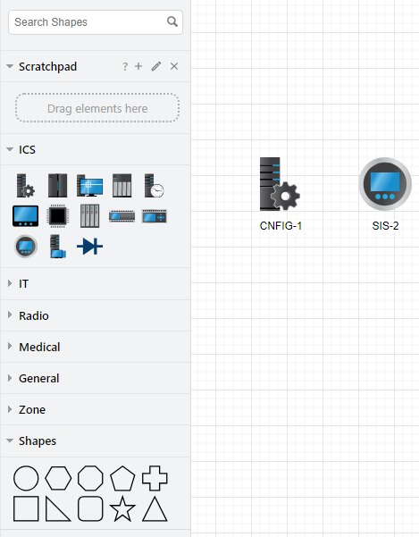
Note: These icons are specifically designed for CSET and cannot be copied and pasted into other applications.